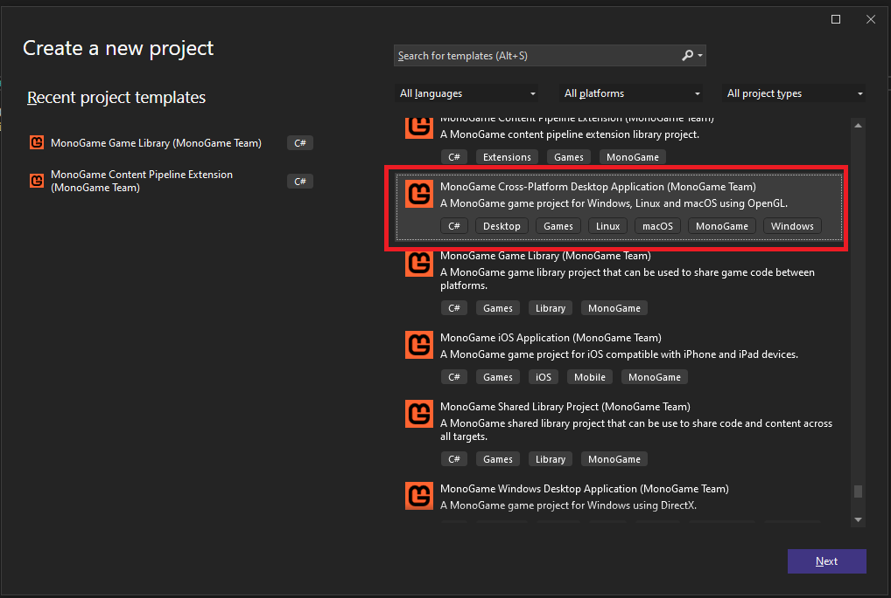
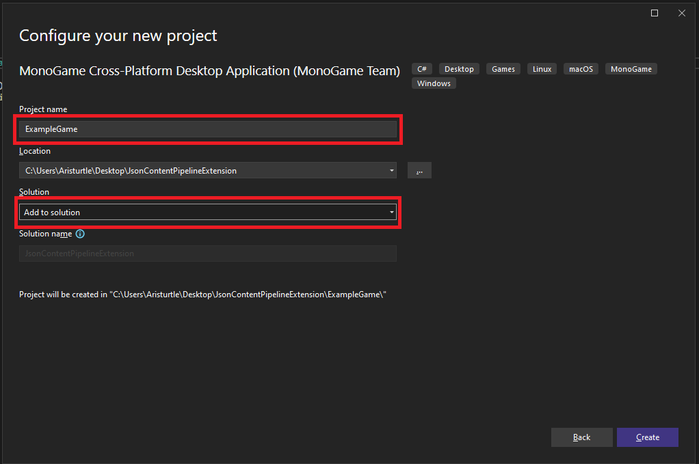
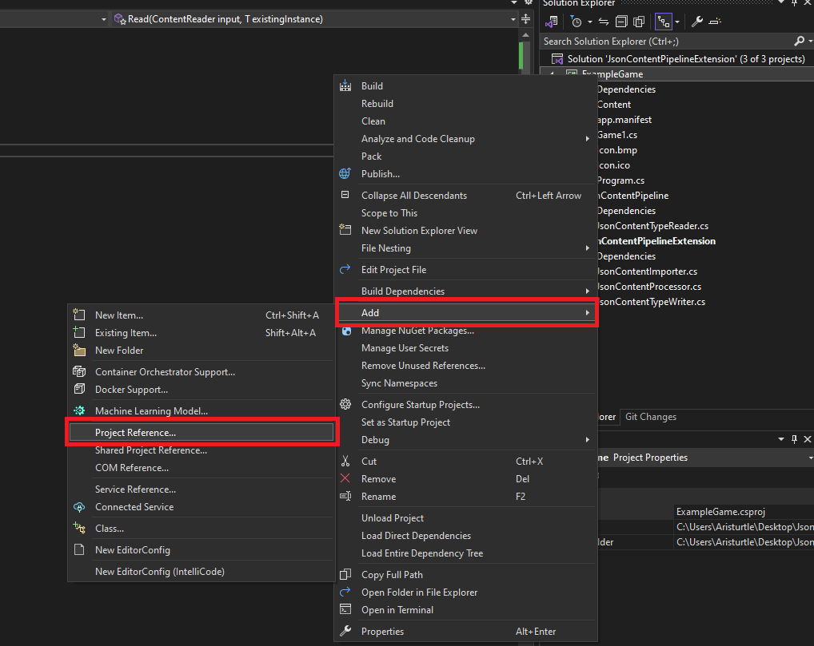
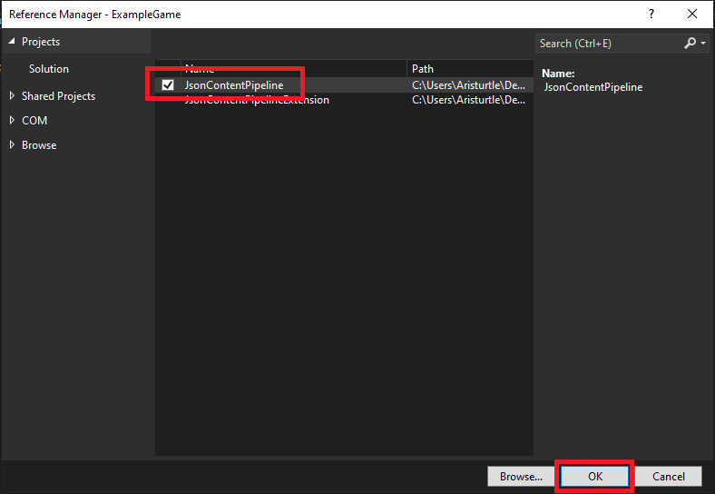
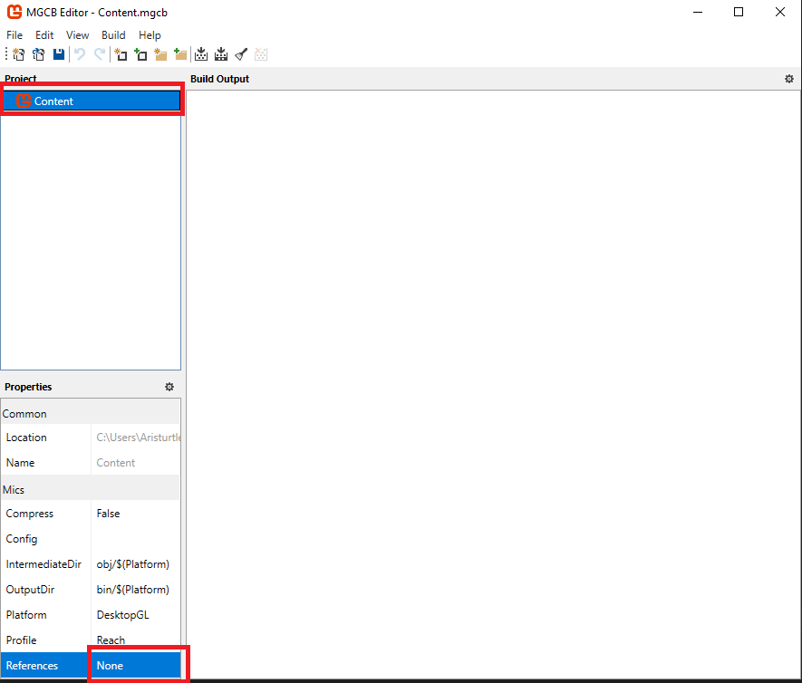
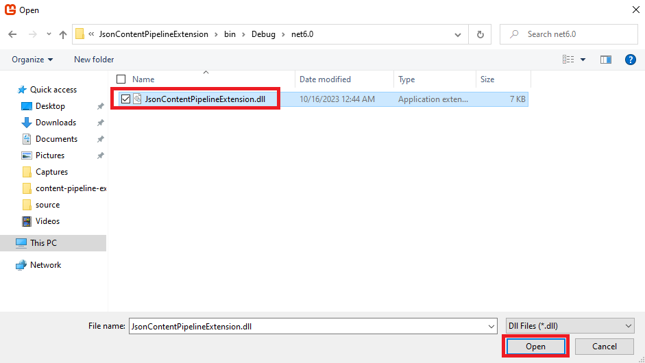
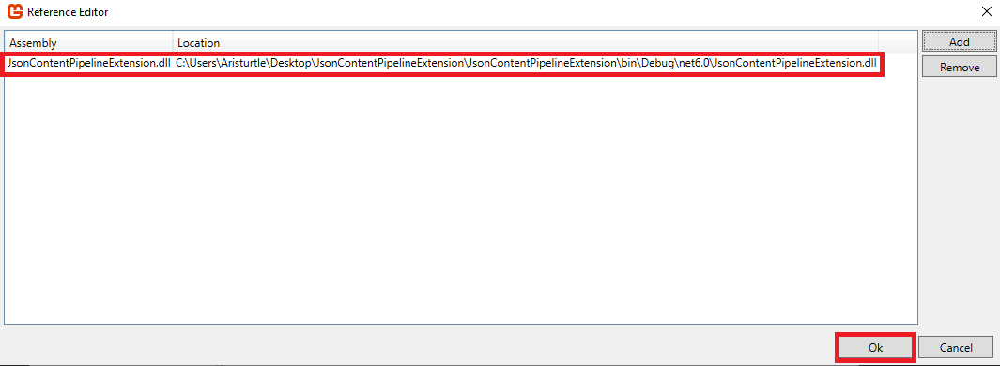
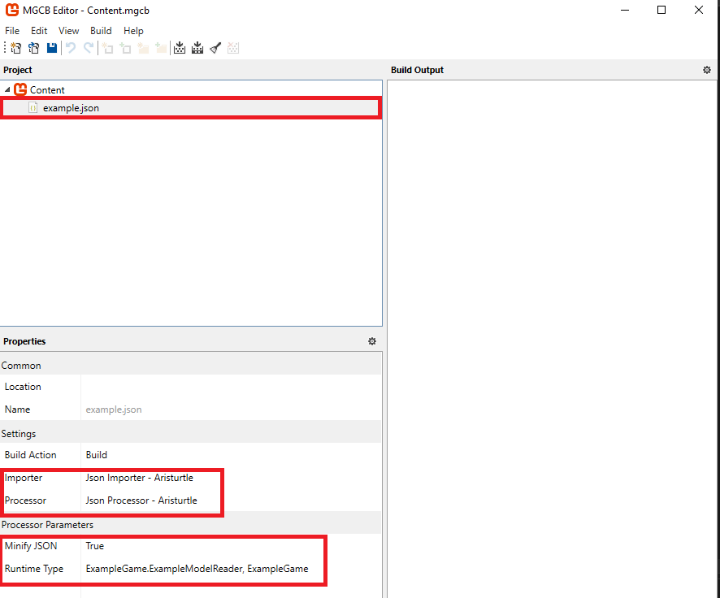

Create Game Project
The final thing we need to cover is how to add the MonoGame Content Pipeline Extension to be used in one of our game projects. On this page, we'll go through the steps of creating a new game project, adding the correct references to both the project and the MGCB Editor, then testing out our new JSON content pipeline extension.
Create a MonoGame Project
We need a game project now to test our content pipeline extension and make sure it's working. Creating a new MonoGame game project should already be familiar for most, but we'll go through the process anyway.
In Visual Studio, click the File > New > Project menu item to open the Create a new project window. From here choose one of the MonoGame templates. For this tutorial, I am going to choose the MonoGame Cross Platform Desktop Project template.

On the Configure your new project window, give your project a name. For this tutorial, I have named mine ExampleGame. Also ensure that the Solution drop-down is set to Add to solution.

Add Project Reference
Next, we need to add a project reference to our game project that references the JsonContentPipeline project that we created which contains the JsonContentTypeReader class. To do this:
- Right-click the game project in the Solution Explorer panel
- In the context menu, select Add -> Project Reference

- In the Reference Manager window tha opens, check the JsonContentPipeline project to add it as a reference to our game project, then click the OK button.

And that's it. Now our game project has a reference to the JsonContentPipeline project.
Add Reference to MGCB Editor
Next, we'll need to add a reference to the JsonContentPipelineExtension to our Content.mgcb file. The easiest way to do this is by using the MGCB Editor.
First, do a build of the JsonContentPipelineExtension project to make sure that the project is build and the .dll is available to reference.
Next, double-click the Content.mgcb file in our project to open it in the MGCB Editor
Note
For Visual Studio Code users, you can open the Content.mgcb file in the MGCB Editor by entering the following command from your project directory
dotnet mgcb-editor ./Content/Content.mgcb
Once the MGCB Editor is open, click the Content node in the Project panel, then click the box next to the Reference property in the Properties panel at the bottom. This will open the Reference Editor window

In the Reference Editor window, click the Add button, then navigate to the build directory of the JsonContentPipelineExtension project and select the JsonContentPipelineExtension.dll file to add as a reference and click the Open button

This should now show that it is added in the Reference Editor window.

Click the Ok button, the choose File -> Save from the MGCB Editor top menu to save the file with the new reference added. After this, you can close the MGCB Editor for now, we'll come back to it in a little bit.
Create an Example Model Class
Next, we need to add an example model class that we can use to test the JSON content loading. This doesn't need to be anything complex, just a simple class with some properties that the JSON can be serialized too. To do this, add a new class file to the game project named ExampleModel.cs, then add the following code to the file
namespace ExampleGame
{
public class ExampleModel
{
public string Name { get; set; }
public int Health { get; set; }
public int Defense { get; set; }
public int Attack { get; set; }
}
}
This is a really simple class that just has an int ID property and two float properties for the X and Y position of the model.
Create a ContentTypeReader For Our Example Model
One of the tricky things when dealing with loading JSON content is how we wrote the JsonContentTypeReader class. The class uses the generic <T> parameter, which is going to make it difficult for the Content.Load<T>() method to choose the correct reader.
To alleviate this specifically for the JSON importer, we need to create a new ContentTypeReader in our game class specifically for the ExampleModel. To do this, create a new class file called ExampleModelReader.cs in the game project and add the following code to it:
using JsonContentPipeline;
namespace ExampleGame
{
internal class ExampleModelReader : JsonContentTypeReader<ExampleModel> { }
}
Note
Creating the additional reader class in out game file is unique to this tutorial situation since we're loading JSON content which can be deserialized to one of many different types.
In a typical Content Pipeline Extension scenario, your content type that you load would only deserialize to one specific type.
Create the Example JSON File
Next, we need to create the example JSON file that we'll be importing using the MGCB Editor and our new extension. We want the contents of the JSON file to be serializable to the ExampleModel class that we just created.
To do this, right-click on the Content directory for our game in the Solution Explorer panel and select Add > New Item. Name the item example.json, then click the Add button.
In our newly created example.json file add the following code
{
"Name": "Aristurtle",
"Health": 100,
"Defense": 50,
"Attack": 20
}
This is a fairly simple JSON file that will deserialize into an instance of our ExampleModel class.
Add the JSON File As Content In The MGCB Editor
Next, open the MGCB Editor again if you closed it previously. Right-click on the Content node in the Project panel and select Add > Existing Item, then choose our example.json file that we just created.
If you click the example.json node in the Project panel, you should see that the Json Importer - Aristurtle and Json Processor - Aristurtle have been automatically selected for the Importer and Processor properties for us.
You can also see that the Minify and Runtime Type properties are available to configure from the properties from the JsonContentProcessor. By default the Runtime Type is blank, so we'll need to edit it to tell it to use the ExampleModelReader we created earlier. We have to enter this as a fully-qualified type name so enter the following
ExampleGame.ExampleModelReader, ExampleGame

Once this is configured, you can choose File > Save in the MGCB Editor and close it.
Load the JSON File Using the ContentManager
The final thing we need to test is that the ContentManager in the game loads our example.json file that was built as a .xnb file properly. To do this, open the Game1.cs file and scroll down to the LoadContent() method and change it to the following.
protected override void LoadContent()
{
_spriteBatch = new SpriteBatch(GraphicsDevice);
// TODO: use this.Content to load your game content here
ExampleModel example = Content.Load<ExampleModel>("example");
}
This one line tells the ContentManager to load the example.xnb file and as an ExampleModel type.
If you put a break point on this line of the code and then start the game as a debug session, you can now step through and see the JSON file being read and returned back an an ExampleModel class instance.